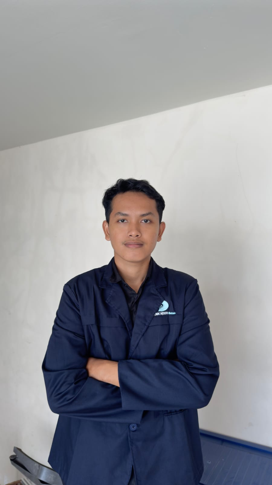
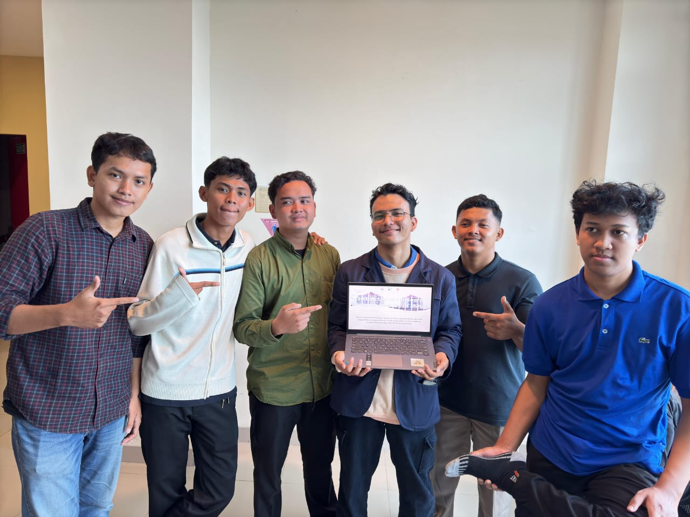
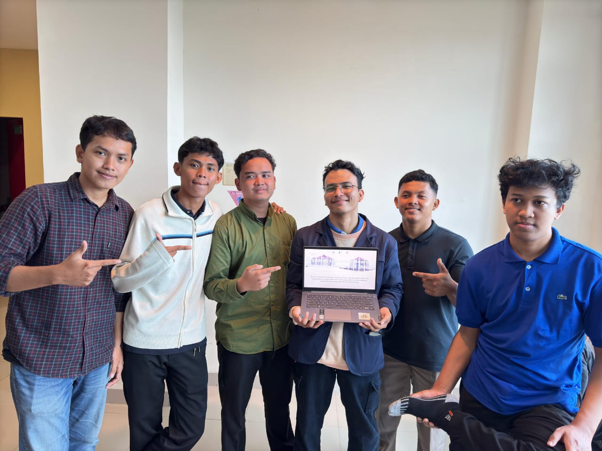
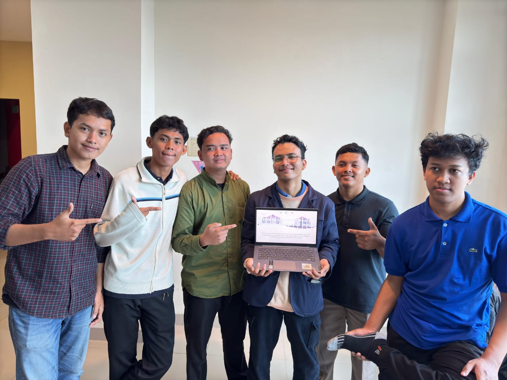

About Me
Hello! I am Muhammad Ibnu Akbar, a passionate Instrumentation Engineer student at Politeknik Negeri Batam. My focus is on developing innovative solutions in automation and process control.
With a strong foundation in programming and instrumentation, I aim to contribute to industries through my technical expertise and problem-solving skills.

 

